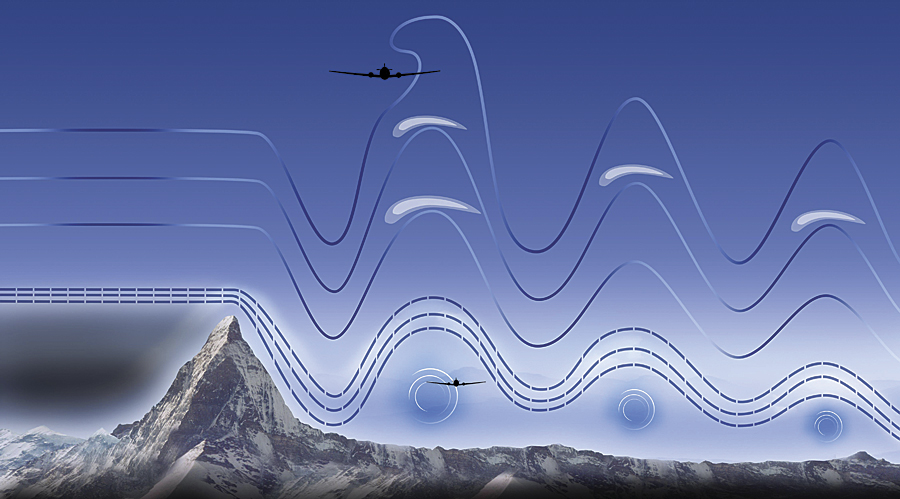

The universe is written in the language of mathematics (Galileo)
What is a net-invisible ElectroMagnetic field?
answer:
- (a) a quantum-scholar?
- (b) t.b.a.
| 
|
My favorite
equation The universe is written in the language of mathematics (Galileo) What is a net-invisible ElectroMagnetic field? answer:
|
|
| Class schedule by chapters/sections (tentative) | |||
|---|---|---|---|
| PDEs from physics; self-adjoint operators (Chapters 1) | |
||
| Assignment 1 (homework/project) | |||
| Wave and diffusion equations, Fourier integrals (Chapter 2) | |
||
| Separation of variables (Chapter 3) | |||
| Fourier series (Chapter 4) | |||
| Assignment 2 (homework/project) | |||
| Laplace equation and Poisson equation (Chapter 5) | |||
| Green's function and distribution theory (Chapter 6) | |||
| Assignment 3* (homework/project) | |||
| Maxwell equations for magnetic field (Chapter 7*) | |||
| Euler equation and fluids (Chapter 8*) | |||
| Water wave model (Chapter 9*) | |||
| Tensors calculus and differential forms (Chapter 10*) | *Numerical methods (Chapters 11*) | ||
| Presentation (group project) | |||
| *Probabilistic method; statistical mechanics (Chapter 12*) | |
||
| Final assignment | |||
| Review | Exam | Date |
|---|---|---|
| Review Exam I | Assigment I | |
| Review Exam II | Assignment II | |
| Review Exam III | Assignment III | |
| Review Final | Final assignment |